The TikZ and PGF Packages
Manual for version 3.1.10
TikZ
15 Actions on Paths¶
15.1 Overview¶
Once a path has been constructed, different things can be done with it. It can be drawn (or stroked) with a “pen”, it can be filled with a color or shading, it can be used for clipping subsequent drawing, it can be used to specify the extend of the picture – or any combination of these actions at the same time.
To decide what is to be done with a path, two methods can be used. First, you can use a special-purpose command like \draw to indicate that the path should be drawn. However, commands like \draw and \fill are just abbreviations for special cases of the more general method: Here, the \path command is used to specify the path. Then, options encountered on the path indicate what should be done with the path.
For example, \path (0,0) circle (1cm); means: “This is a path consisting of a circle around the origin. Do not do anything with it (throw it away).” However, if the option draw is encountered anywhere on the path, the circle will be drawn. “Anywhere” is any point on the path where an option can be given, which is everywhere where a path command like circle (1cm) or rectangle (1,1) or even just (0,0) would also be allowed. Thus, the following commands all draw the same circle:
Finally, \draw (0,0) circle (1cm); also draws a path, because \draw is an abbreviation for \path [draw] and thus the command expands to the first line of the above example.
Similarly, \fill is an abbreviation for \path[fill] and \filldraw is an abbreviation for the command \path[fill,draw]. Since options accumulate, the following commands all have the same effect:
In the following subsection the different actions that can be performed on a path are explained. The following commands are abbreviations for certain sets of actions, but for many useful combinations there are no abbreviations:
-
\draw ¶
Inside {tikzpicture} this is an abbreviation for \path[draw].
-
\fill ¶
Inside {tikzpicture} this is an abbreviation for \path[fill].
-
\filldraw ¶
Inside {tikzpicture} this is an abbreviation for \path[fill,draw].
-
\pattern ¶
Inside {tikzpicture} this is an abbreviation for \path[pattern].
-
\shade ¶
Inside {tikzpicture} this is an abbreviation for \path[shade].
-
\shadedraw ¶
Inside {tikzpicture} this is an abbreviation for \path[shade,draw].
-
\clip ¶
Inside {tikzpicture} this is an abbreviation for \path[clip].
-
\useasboundingbox ¶
Inside {tikzpicture} this is an abbreviation for \path[use as bounding box].
15.2 Specifying a Color¶
The most unspecific option for setting colors is the following:
-
/tikz/color=⟨color name⟩(no default) ¶
-
• Specify a new color using \definecolor. Only the color models gray, rgb, and RGB are supported3.
Example: \definecolor{orange}{rgb}{1,0.5,0}
-
• Use \colorlet to define a new color based on an old one. Here, the ! mechanism is supported, though only “once” (use multiple \colorlet for more fancy colors).
Example: \colorlet{lightgray}{black!25}
-
• Use \color{⟨color name⟩} to set the color in the current TeX group. \aftergroup-hackery is used to restore the color after the group.
This option sets the color that is used for fill, drawing, and text inside the current scope. Any special settings for filling colors or drawing colors are immediately “overruled” by this option.
The ⟨color name⟩ is the name of a previously defined color. For LaTeX users, this is just a normal “LaTeX-color” and the xcolor extensions are allowed. Here is an example:
It is possible to “leave out” the color= part and you can also write:
What happens is that every option that TikZ does not know, like red!20, gets a “second chance” as a color name.
For plain TeX users, it is not so easy to specify colors since plain TeX has no “standardized” color naming mechanism. Because of this, pgf emulates the xcolor package, though the emulation is extremely basic (more precisely, what I could hack together in two hours or so). The emulation allows you to do the following:
As pointed out above, the color= option applies to “everything” (except to shadings), which is not always what you want. Because of this, there are several more specialized color options. For example, the draw= option sets the color used for drawing, but does not modify the color used for filling. These color options are documented where the path action they influence is described.
3 ConTeXt users should be aware that \definecolor has a different meaning in ConTeXt. There is a low-level equivalent named \pgfutil@definecolor which can be used instead.
15.3 Drawing a Path¶
You can draw a path using the following option:
-
/tikz/draw=⟨color⟩ (default is scope’s color setting) ¶
Causes the path to be drawn. “Drawing” (also known as “stroking”) can be thought of as picking up a pen and moving it along the path, thereby leaving “ink” on the canvas.
There are numerous parameters that influence how a line is drawn, like the thickness or the dash pattern. These options are explained below.
If the optional ⟨color⟩ argument is given, drawing is done using the given ⟨color⟩. This color can be different from the current filling color, which allows you to draw and fill a path with different colors. If no ⟨color⟩ argument is given, the last usage of the color= option is used.
If the special color name none is given, this option causes drawing to be “switched off”. This is useful if a style has previously switched on drawing and you locally wish to undo this effect.
Although this option is normally used on paths to indicate that the path should be drawn, it also makes sense to use the option with a {scope} or {tikzpicture} environment. However, this will not cause all paths to be drawn. Instead, this just sets the ⟨color⟩ to be used for drawing paths inside the environment.
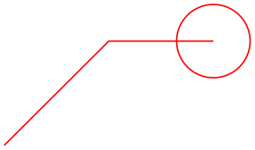
\begin{tikzpicture}
\path[draw=red] (0,0) --
(1,1) --
(2,1) circle
(10pt);
\end{tikzpicture}
The following subsections list the different options that influence how a path is drawn. All of these options only have an effect if the draw option is given (directly or indirectly).
15.3.1 Graphic Parameters: Line Width, Line Cap, and Line Join¶
-
/tikz/line width=⟨dimension⟩ (no default, initially 0.4pt) ¶
Specifies the line width. Note the space.
\tikz \draw[line width=5pt] (0,0) --
(1cm,1.5ex);
There are a number of predefined styles that provide more “natural” ways of setting the line width. You can also redefine these styles.
-
/tikz/ultra thin(style, no value) ¶
Sets the line width to 0.1pt.
\tikz \draw[ultra thin] (0,0) --
(1cm,1.5ex);
-
/tikz/very thin(style, no value) ¶
Sets the line width to 0.2pt.
-
/tikz/semithick(style, no value) ¶
Sets the line width to 0.6pt.
-
/tikz/thick(style, no value) ¶
Sets the line width to 0.8pt.
-
/tikz/very thick(style, no value) ¶
Sets the line width to 1.2pt.
\tikz \draw[very thick] (0,0) --
(1cm,1.5ex);
-
/tikz/ultra thick(style, no value) ¶
Sets the line width to 1.6pt.
\tikz \draw[ultra thick] (0,0) --
(1cm,1.5ex);
-
/tikz/line cap=⟨type⟩ (no default, initially butt) ¶
Specifies how lines “end”. Permissible ⟨type⟩ are round, rect, and butt. They have the following effects:
\begin{tikzpicture}
\begin{scope}[line width=10pt]
\draw[line cap=round] (0,1 ) --
+(1,0);
\draw[line cap=butt] (0,.5) --
+(1,0);
\draw[line cap=rect] (0,0 ) --
+(1,0);
\end{scope}
\draw[white,line width=1pt]
(0,0 ) --
+(1,0) (0,.5) --
+(1,0) (0,1 ) --
+(1,0);
\end{tikzpicture}
-
/tikz/line join=⟨type⟩ (no default, initially miter) ¶
-
/tikz/miter limit=⟨factor⟩ (no default, initially 10) ¶
Specifies how lines “join”. Permissible ⟨type⟩ are round, bevel, and miter. They have the following effects:
\begin{tikzpicture}[line width=10pt]
\draw[line join=round] (0,0) --
++(.5,1) --
++(.5,-1);
\draw[line join=bevel] (1.25,0) --
++(.5,1) --
++(.5,-1);
\draw[line join=miter] (2.5,0) --
++(.5,1) --
++(.5,-1);
\useasboundingbox (0,1.5); % enlarge bounding box
\end{tikzpicture}
When you use the miter join and there is a very sharp corner (a small angle), the miter join may protrude very far over the actual joining point. In this case, if it were to protrude by more than ⟨factor⟩ times the line width, the miter join is replaced by a bevel join.
\begin{tikzpicture}[line width=5pt]
\draw (0,0) --
++(5,.5) --
++(-5,.5);
\draw[miter limit=25] (6,0) --
++(5,.5) --
++(-5,.5);
\useasboundingbox (14,0); % make bounding box bigger
\end{tikzpicture}
15.3.2 Graphic Parameters: Dash Pattern¶
-
/tikz/dash pattern=⟨dash pattern⟩(no default) ¶
Sets the dashing pattern. The syntax is the same as in metafont. For example following pattern on 2pt off 3pt on 4pt off 4pt means “draw 2pt, then leave out 3pt, then draw 4pt once more, then leave out 4pt again, repeat”.
\begin{tikzpicture}[dash pattern=on 2pt off 3pt on 4pt off 4pt]
\draw (0pt,0pt) --
(3.5cm,0pt);
\end{tikzpicture}
-
/tikz/dash phase=⟨dash phase⟩ (no default, initially 0pt) ¶
Shifts the start of the dash pattern by ⟨phase⟩.
\begin{tikzpicture}[dash pattern=on 20pt off 10pt]
\draw[dash phase=0pt] (0pt,3pt) --
(3.5cm,3pt);
\draw[dash phase=10pt] (0pt,0pt) --
(3.5cm,0pt);
\end{tikzpicture}
-
/tikz/dash expand off(no value) ¶
Makes the off part of a dash pattern expandable such that it can stretch. This only works when there is a single on and a single off field and requires the decorations library. Right now this option has to be specified on the path where it is supposed to take effect after the dash pattern option because the dash pattern has to be known at the point where it is applied.
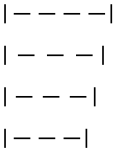
\usetikzlibrary {decorations}
\begin{tikzpicture}[|-|, dash pattern=on 4pt off 2pt]
\draw [dash expand off] (0pt,30pt) --
(26pt,30pt);
\draw [dash expand off] (0pt,20pt) --
(24pt,20pt);
\draw [dash expand off] (0pt,10pt) --
(22pt,10pt);
\draw [dash expand off] (0pt, 0pt) --
(20pt, 0pt);
\end{tikzpicture}
As for the line thickness, some predefined styles allow you to set the dashing conveniently.
-
/tikz/solid(style, no value) ¶
Shorthand for setting a solid line as “dash pattern”. This is the default.
-
/tikz/dotted(style, no value) ¶
Shorthand for setting a dotted dash pattern.
-
/tikz/densely dotted(style, no value) ¶
Shorthand for setting a densely dotted dash pattern.
\tikz \draw[densely dotted] (0pt,0pt) --
(50pt,0pt);
-
/tikz/loosely dotted(style, no value) ¶
Shorthand for setting a loosely dotted dash pattern.
\tikz \draw[loosely dotted] (0pt,0pt) --
(50pt,0pt);
-
/tikz/dashed(style, no value) ¶
Shorthand for setting a dashed dash pattern.
-
/tikz/densely dashed(style, no value) ¶
Shorthand for setting a densely dashed dash pattern.
\tikz \draw[densely dashed] (0pt,0pt) --
(50pt,0pt);
-
/tikz/loosely dashed(style, no value) ¶
Shorthand for setting a loosely dashed dash pattern.
\tikz \draw[loosely dashed] (0pt,0pt) --
(50pt,0pt);
-
/tikz/dash dot(style, no value) ¶
Shorthand for setting a dashed and dotted dash pattern.
-
/tikz/densely dash dot(style, no value) ¶
Shorthand for setting a densely dashed and dotted dash pattern.
\tikz \draw[densely dash dot] (0pt,0pt) --
(50pt,0pt);
-
/tikz/loosely dash dot(style, no value) ¶
Shorthand for setting a loosely dashed and dotted dash pattern.
\tikz \draw[loosely dash dot] (0pt,0pt) --
(50pt,0pt);
-
/tikz/dash dot dot(style, no value) ¶
Shorthand for setting a dashed and dotted dash pattern with more dots.
\tikz \draw[dash dot dot] (0pt,0pt) --
(50pt,0pt);
-
/tikz/densely dash dot dot(style, no value) ¶
Shorthand for setting a densely dashed and dotted dash pattern with more dots.
\tikz \draw[densely dash dot dot] (0pt,0pt) --
(50pt,0pt);
-
/tikz/loosely dash dot dot(style, no value) ¶
Shorthand for setting a loosely dashed and dotted dash pattern with more dots.
\tikz \draw[loosely dash dot dot] (0pt,0pt) --
(50pt,0pt);
15.3.3 Graphic Parameters: Draw Opacity¶
When a line is drawn, it will normally “obscure” everything behind it as if you had used perfectly opaque ink. It is also possible to ask TikZ to use an ink that is a little bit (or a big bit) transparent using the draw opacity option. This is explained in Section 23 on transparency in more detail.
15.3.4 Graphic Parameters: Double Lines and Bordered Lines¶
-
/tikz/double=⟨core color⟩ (default white) ¶
This option causes “two” lines to be drawn instead of a single one. However, this is not what really happens. In reality, the path is drawn twice. First, with the normal drawing color, secondly with the ⟨core color⟩, which is normally white. Upon the second drawing, the line width is reduced. The net effect is that it appears as if two lines had been drawn and this works well even with complicated, curved paths:
\tikz \draw[double]
plot[smooth cycle] coordinates{(0,0) (1,1) (1,0) (0,1)};
You can also use the doubling option to create an effect in which a line seems to have a certain “border”:
\begin{tikzpicture}
\draw (0,0) --
(1,1);
\draw[draw=white,double=red,very thick] (0,1) --
(1,0);
\end{tikzpicture}
-
/tikz/double distance=⟨dimension⟩ (no default, initially 0.6pt) ¶
Sets the distance the “two” lines are spaced apart. In reality, this is the thickness of the line that is used to draw the path for the second time. The thickness of the first time the path is drawn is twice the normal line width plus the given ⟨dimension⟩. As a side-effect, this option “selects” the double option.
\begin{tikzpicture}
\draw[very thick,double] (0,0) arc
(180:90:1cm);
\draw[very thick,double distance=2pt] (1,0) arc
(180:90:1cm);
\draw[thin,double distance=2pt] (2,0) arc
(180:90:1cm);
\end{tikzpicture}
-
/tikz/double distance between line centers=⟨dimension⟩(no default) ¶
This option works like double distance, only the distance is not the distance between (inner) borders of the two main lines, but between their centers. Thus, the thickness the first time the path is drawn is the normal line width plus the given ⟨dimension⟩, while the line width of the second line that is drawn is ⟨dimension⟩ minus the normal line width. As a side-effect, this option “selects” the double option.

\begin{tikzpicture}[double distance between line centers=3pt]
\foreach \lw in
{0.5,1,1.5,2,2.5}
\draw[line width=\lw pt,double] (\lw,0) --
++(4mm,0);
\end{tikzpicture}
\begin{tikzpicture}[double distance=3pt]
\foreach \lw in
{0.5,1,1.5,2,2.5}
\draw[line width=\lw pt,double] (\lw,0) --
++(4mm,0);
\end{tikzpicture}
-
/tikz/double equal sign distance(style, no value) ¶
This style selects a double line distance such that it corresponds to the distance of the two lines in an equal sign.
\usepackage {amsmath} \usetikzlibrary {arrows.meta}
\normalsize $=\implies$\tikz[baseline,double equal sign distance]
\draw[double,-{Implies[]}](0,0.6ex) --++(3ex,0);
15.4 Adding Arrow Tips to a Path¶
In different situations, TikZ will add arrow tips to the end of a path. For this to happen, a number of different things need to be specified:
-
1. You must have used the arrows key, explained in detail in Section 16, to setup which kinds of arrow tips you would like.
-
2. The path may not be closed (like a circle or a rectangle) and, if it consists of several subpaths, further restrictions apply as explained in Section 16.
-
3. The tips key must be set to an appropriate value, see Section 16 once more.
For the current section on paths, it is only important that when you add the tips option to a path that is not drawn, arrow tips will still be added at the beginning and at the end of the current path. This is true even when “only” arrow tips get drawn for a path without drawing the path itself. Here is an example:
15.5 Filling a Path¶
To fill a path, use the following option:
-
/tikz/fill=⟨color⟩ (default is scope’s color setting) ¶
This option causes the path to be filled. All unclosed parts of the path are first closed, if necessary. Then, the area enclosed by the path is filled with the current filling color, which is either the last color set using the general color= option or the optional color ⟨color⟩. For self-intersection paths and for paths consisting of several closed areas, the “enclosed area” is somewhat complicated to define and two different definitions exist, namely the nonzero winding number rule and the even odd rule, see the explanation of these options, below.
Just as for the draw option, setting ⟨color⟩ to none disables filling locally.
If the fill option is used together with the draw option (either because both are given as options or because a \filldraw command is used), the path is filled first, then the path is drawn second. This is especially useful if different colors are selected for drawing and for filling. Even if the same color is used, there is a difference between this command and a plain fill: A “filldrawn” area will be slightly larger than a filled area because of the thickness of the “pen”.
\begin{tikzpicture}[fill=yellow!80!black,line width=5pt]
\filldraw (0,0) --
(1,1) --
(2,1);
\filldraw (4,0) circle
(.5cm) (4.5,0) circle
(.5cm);
\filldraw[even odd rule] (6,0) circle
(.5cm) (6.5,0) circle
(.5cm);
\filldraw (8,0) --
(9,1) --
(10,0) circle
(.5cm);
\end{tikzpicture}
15.5.1 Graphic Parameters: Fill Pattern¶
Instead of filling a path with a single solid color, it is also possible to fill it with a tiling pattern. Imagine a small tile that contains a simple picture like a star. Then these tiles are (conceptually) repeated infinitely in all directions, but clipped against the path.
Tiling patterns come in two variants: inherently colored patterns and form-only patterns. An inherently colored pattern is, say, a red star with a black border and will always look like this. A form-only pattern may have a different color each time it is used, only the form of the pattern will stay the same. As such, form-only patterns do not have any colors of their own, but when it is used the current pattern color is used as its color.
Patterns are not overly flexible. In particular, it is not possible to change the size or orientation of a pattern without declaring a new pattern. For complicated cases, it may be easier to use two nested \foreach statements to simulate a pattern, but patterns are rendered much more quickly than simulated ones.
-
/tikz/pattern=⟨name⟩ (default is scope’s pattern) ¶
This option causes the path to be filled with a pattern. If the ⟨name⟩ is given, this pattern is used, otherwise the pattern set in the enclosing scope is used. As for the draw and fill options, setting ⟨name⟩ to none disables filling locally.
The pattern works like a fill color. In particular, setting a new fill color will fill the path with a solid color once more.
Strangely, no ⟨name⟩s are permissible by default. You need to load for instance the patterns library, see Section 62, to install predefined patterns.
\usetikzlibrary {patterns}
\begin{tikzpicture}
\draw[pattern=dots] (0,0) circle
(1cm);
\draw[pattern=fivepointed stars] (0,0) rectangle
(3,1);
\end{tikzpicture}
-
/tikz/pattern color=⟨color⟩(no default) ¶
This option is used to set the color to be used for form-only patterns. This option has no effect on inherently colored patterns.
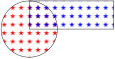
\usetikzlibrary {patterns}
\begin{tikzpicture}
\draw[pattern color=red,pattern=fivepointed stars] (0,0) circle
(1cm);
\draw[pattern color=blue,pattern=fivepointed stars] (0,0) rectangle
(3,1);
\end{tikzpicture}
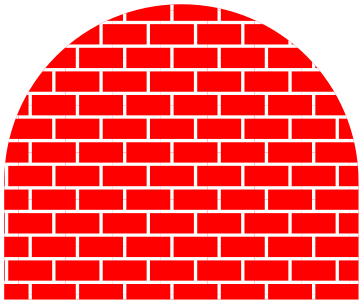
\usetikzlibrary {patterns}
\begin{tikzpicture}
\def\mypath{(0,0) --
+(0,1) arc
(180:0:1.5cm) --
+(0,-1)}
\fill [red] \mypath;
\pattern[pattern color=white,pattern=bricks] \mypath;
\end{tikzpicture}
15.5.2 Graphic Parameters: Interior Rules¶
The following two options can be used to decide how interior points should be determined:
-
/tikz/nonzero rule(no value) ¶
If this rule is used (which is the default), the following method is used to determine whether a given point is “inside” the path: From the point, shoot a ray in some direction towards infinity (the direction is chosen such that no strange borderline cases occur). Then the ray may hit the path. Whenever it hits the path, we increase or decrease a counter, which is initially zero. If the ray hits the path as the path goes “from left to right” (relative to the ray), the counter is increased, otherwise it is decreased. Then, at the end, we check whether the counter is nonzero (hence the name). If so, the point is deemed to lie “inside”, otherwise it is “outside”. Sounds complicated? It is.
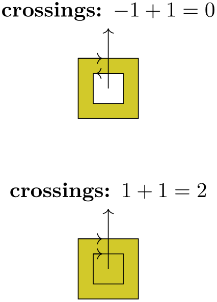
\begin{tikzpicture}
\filldraw[fill=yellow!80!black]
% Clockwise rectangle
(0,0) --
(0,1) --
(1,1) --
(1,0) --
cycle
% Counter-clockwise rectangle
(0.25,0.25) --
(0.75,0.25) --
(0.75,0.75) --
(0.25,0.75) --
cycle;
\draw[->] (0,1) --
(.4,1);
\draw[->] (0.75,0.75) --
(0.3,.75);
\draw[->] (0.5,0.5) --
+(0,1) node[above] {crossings:
$-1+1
=
0$};
\begin{scope}[yshift=-3cm]
\filldraw[fill=yellow!80!black]
% Clockwise rectangle
(0,0) --
(0,1) --
(1,1) --
(1,0) --
cycle
% Clockwise rectangle
(0.25,0.25) --
(0.25,0.75) --
(0.75,0.75) --
(0.75,0.25) --
cycle;
\draw[->] (0,1) --
(.4,1);
\draw[->] (0.25,0.75) --
(0.4,.75);
\draw[->] (0.5,0.5) --
+(0,1) node[above] {crossings:
$1+1
=
2$};
\end{scope}
\end{tikzpicture}
-
/tikz/even odd rule(no value) ¶
This option causes a different method to be used for determining the inside and outside of paths. While it is less flexible, it turns out to be more intuitive.
With this method, we also shoot rays from the point for which we wish to determine whether it is inside or outside the filling area. However, this time we only count how often we “hit” the path and declare the point to be “inside” if the number of hits is odd.
Using the even-odd rule, it is easy to “drill holes” into a path.
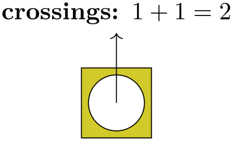
\begin{tikzpicture}
\filldraw[fill=yellow!80!black,even odd rule]
(0,0) rectangle
(1,1) (0.5,0.5) circle
(0.4cm);
\draw[->] (0.5,0.5) --
+(0,1) [above] node{crossings:
$1+1
=
2$};
\end{tikzpicture}
15.5.3 Graphic Parameters: Fill Opacity¶
Analogously to the draw opacity, you can also set the fill opacity. Please see Section 23 for more details.
15.6 Generalized Filling: Using Arbitrary Pictures to Fill a Path¶
Sometimes you wish to “fill” a path with something even more complicated than a pattern, let alone a single color. For instance, you might wish to use an image to fill the path or some other, complicated drawing. In principle, this effect can be achieved by first using the path for clipping and then, subsequently, drawing the desired image or picture. However, there is an option that makes this process much easier:
-
/tikz/path picture=⟨code⟩(no default) ¶
-
Predefined node path picture bounding box ¶
When this option is given on a path and when the ⟨code⟩ is not empty, the following happens: After all other “filling” operations are done with the path, which are caused by the options fill, pattern and shade, a local scope is opened and the path is temporarily installed as a clipping path. Then, the ⟨code⟩ is executed, which can now draw something. Then, the local scope ends and, possibly, the path is stroked, provided the draw option has been given.
As with other keys like fill or draw this option needs to be given on a path, setting the path picture outside a path has no effect (the path picture is cleared at the beginning of each path).
The ⟨code⟩ can be any normal TikZ code like \draw ... or \node .... As always, when you include an external graphic, you need to put it inside a \node.
Note that no special actions are taken to transform the origin in any way. This means that the coordinate (0,0) is still where is was when the path was being constructed and not – as one might expect – at the lower left corner of the path. However, you can use the following special node to access the size of the path:
This node is of shape rectangle. Its size and position are those of current path bounding box just before the ⟨code⟩ of the path picture started to be executed. The ⟨code⟩ can construct its own paths, so accessing the current path bounding box inside the ⟨code⟩ yields the bounding box of any path that is currently being constructed inside the ⟨code⟩.
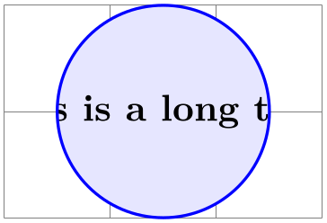
\begin{tikzpicture}
\draw [help lines] (0,0) grid
(3,2);
\filldraw [fill=blue!10,draw=blue,thick] (1.5,1) circle
(1)
[path picture={
\node at
(path picture bounding box.center) {
This
is a long text.
};}
];
\end{tikzpicture}
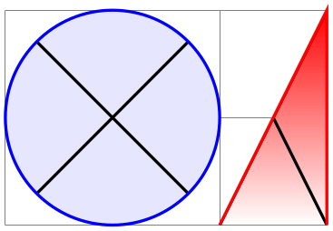
\begin{tikzpicture}[cross/.style={path picture={
\draw[black]
(path picture bounding box.south east) --
(path picture bounding box.north west)
(path picture bounding box.south west) --
(path picture bounding box.north east);
}}]
\draw [help lines] (0,0) grid
(3,2);
\filldraw [cross,fill=blue!10,draw=blue,thick] (1,1) circle
(1);
\path [cross,top color=red,draw=red,thick] (2,0) --
(3,2) --
(3,0);
\end{tikzpicture}
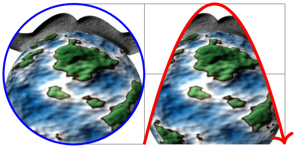
\begin{tikzpicture}[path image/.style={
path picture={
\node at
(path picture bounding box.center) {
\includegraphics[height=3cm]{#1}
};}}]
\draw [help lines] (0,0) grid
(3,2);
\draw [path image=images/brave-gnu-world-logo,draw=blue,thick]
(0,1) circle
(1);
\draw [path image=images/brave-gnu-world-logo,draw=red,very thick,->]
(1,0) parabola[parabola height=2cm] (3,0);
\end{tikzpicture}
15.7 Shading a Path¶
You can shade a path using the shade option. A shading is like a filling, only the shading changes its color smoothly from one color to another.
-
/tikz/shade(no value) ¶
Causes the path to be shaded using the currently selected shading (more on this later). If this option is used together with the draw option, then the path is first shaded, then drawn.
It is not an error to use this option together with the fill option, but it makes no sense.
\tikz \shadedraw (0,0) circle
(1ex);
For some shadings it is not really clear how they can “fill” the path. For example, the ball shading normally looks like this: . How is this supposed to shade a rectangle? Or a triangle?
To solve this problem, the predefined shadings like ball or axis fill a large rectangle completely in a sensible way. Then, when the shading is used to “shade” a path, what actually happens is that the path is temporarily used for clipping and then the rectangular shading is drawn, scaled and shifted such that all parts of the path are filled.
The default shading is a smooth transition from gray to white and from top to bottom. However, other shadings are also possible, for example a shading that will sweep a color from the center to the corners outward. To choose the shading, you can use the shading= option, which will also automatically invoke the shade option. Note that this does not change the shading color, only the way the colors sweep. For changing the colors, other options are needed, which are explained below.
-
/tikz/shading=⟨name⟩(no default) ¶
-
/tikz/shading angle=⟨degrees⟩ (no default, initially 0) ¶
This selects a shading named ⟨name⟩. The following shadings are predefined: axis, radial, and ball.
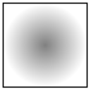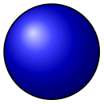
\tikz \shadedraw [shading=axis] (0,0) rectangle
(1,1);
\tikz \shadedraw [shading=radial] (0,0) rectangle
(1,1);
\tikz \shadedraw [shading=ball] (0,0) circle
(.5cm);
The shadings as well as additional shadings are described in more detail in Section 69.
To change the color of a shading, special options are needed like left color, which sets the color of an axis shading from left to right. These options implicitly also select the correct shading type, see the following example
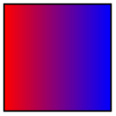
\tikz \shadedraw [left color=red,right color=blue]
(0,0) rectangle
(1,1);
For a complete list of the possible options see Section 69 once more.
This option rotates the shading (not the path!) by the given angle. For example, we can turn a top-to-bottom axis shading into a left-to-right shading by rotating it by \(90^\circ \).
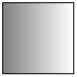
\tikz \shadedraw [shading=axis,shading angle=90] (0,0) rectangle
(1,1);
You can also define new shading types yourself. However, for this, you need to use the basic layer directly, which is, well, more basic and harder to use. Details on how to create a shading appropriate for filling paths are given in Section 114.3.
15.8 Establishing a Bounding Box¶
pgf is reasonably good at keeping track of the size of your picture and reserving just the right amount of space for it in the main document. However, in some cases you may want to say things like “do not count this for the picture size” or “the picture is actually a little large”. For this you can use the option use as bounding box or the command \useasboundingbox, which is just a shorthand for \path[use as bounding box].
-
/tikz/use as bounding box(no value) ¶
Normally, when this option is given on a path, the bounding box of the present path is used to determine the size of the picture and the size of all subsequent paths are ignored. However, if there were previous path operations that have already established a larger bounding box, it will not be made smaller by this operation (consider the \pgfresetboundingbox command to reset the previous bounding box).
In a sense, use as bounding box has the same effect as clipping all subsequent drawing against the current path – without actually doing the clipping, only making pgf treat everything as if it were clipped.
The first application of this option is to have a {tikzpicture} overlap with the main text:
Left
of
picture\begin{tikzpicture}
\draw[use as bounding box] (2,0) rectangle
(3,1);
\draw (1,0) --
(4,.75);
\end{tikzpicture}right
of
picture.
In a second application this option can be used to get better control over the white space around the picture:
Left
of
picture
\begin{tikzpicture}
\useasboundingbox (0,0) rectangle
(3,1);
\fill (.75,.25) circle
(.5cm);
\end{tikzpicture}
right
of
picture.
Note: If this option is used on a path inside a TeX group (scope), the effect “lasts” only until the end of the scope. Again, this behavior is the same as for clipping.
Consider using \useasboundingbox together with \pgfresetboundingbox in order to replace the bounding box with a new one.
There is a node that allows you to get the size of the current bounding box. The current bounding box node has the rectangle shape and its size is always the size of the current bounding box.
Similarly, the current path bounding box node has the rectangle shape and the size of the bounding box of the current path.
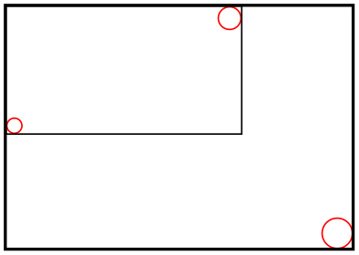
\begin{tikzpicture}
\draw[red] (0,0) circle
(2pt);
\draw[red] (2,1) circle
(3pt);
\draw (current bounding box.south west) rectangle
(current bounding box.north east);
\draw[red] (3,-1) circle
(4pt);
\draw[thick] (current bounding box.south west) rectangle
(current bounding box.north east);
\end{tikzpicture}
Occasionally, you may want to align multiple tikzpicture environments horizontally and/or vertically at some prescribed position. The vertical alignment can be realized by means of the baseline option since TeX supports the concept of box depth natively. For horizontal alignment, things are slightly more involved. The following approach is realized by means of negative \hspaces before and/or after the picture, thereby removing parts of the picture. However, the actual amount of negative horizontal space is provided by means of image coordinates using the trim left and trim right keys:
-
/tikz/trim left=⟨dimension or coordinate or default⟩ (default 0pt) ¶
The trim left key tells pgf to discard everything which is left of the provided ⟨dimension or coordinate⟩. Here, ⟨dimension⟩ is a single \(x\) coordinate of the picture and ⟨coordinate⟩ is a point with \(x\) and \(y\) coordinates (but only its \(x\) coordinate will be used). The effect is the same as if you issue \hspace{-s} where s is the difference of the picture’s bounding box lower left \(x\) coordinate and the \(x\) coordinate specified as ⟨dimension or coordinate⟩:
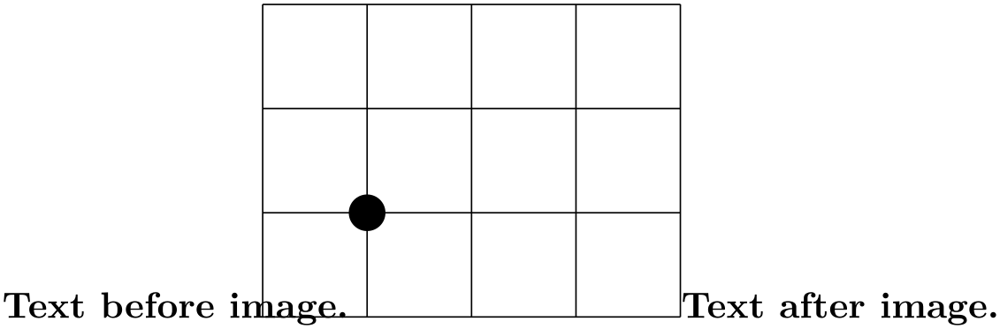
Text
before
image.%
\begin{tikzpicture}[trim left]
\draw (-1,-1) grid
(3,2);
\fill (0,0) circle
(5pt);
\end{tikzpicture}%
Text
after
image.
Since trim left uses the default trim left=0pt, everything left of \(x=0\) is removed from the bounding box.
The following example has once the relative long label \(-1\) and once the shorter label \(1\). Horizontal alignment is established with trim left:
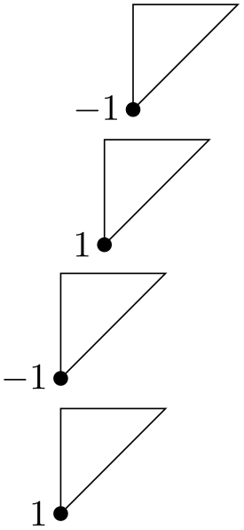
\begin{tikzpicture}
\draw (0,1) --
(0,0) --
(1,1) --
cycle;
\fill (0,0) circle
(2pt);
\node[left] at
(0,0) {$-1$};
\end{tikzpicture}
\par
\begin{tikzpicture}
\draw (0,1) --
(0,0) --
(1,1) --
cycle;
\fill (0,0) circle
(2pt);
\node[left] at
(0,0) {$1$};
\end{tikzpicture}
\par
\begin{tikzpicture}[trim left]
\draw (0,1) --
(0,0) --
(1,1) --
cycle;
\fill (0,0) circle
(2pt);
\node[left] at
(0,0) {$-1$};
\end{tikzpicture}
\par
\begin{tikzpicture}[trim left]
\draw (0,1) --
(0,0) --
(1,1) --
cycle;
\fill (0,0) circle
(2pt);
\node[left] at
(0,0) {$1$};
\end{tikzpicture}
Use trim left=default to reset the value.
-
/tikz/trim right=⟨dimension or coordinate or default⟩(no default) ¶
This key is similar to trim left: it discards everything which is right of the provided ⟨dimension or coordinate⟩. As for trim left, ⟨dimension⟩ denotes a single \(x\) coordinate of the picture and ⟨coordinate⟩ a coordinate with \(x\) and \(y\) value (although only its \(x\) component will be used).
We use the same example from above and add trim right:
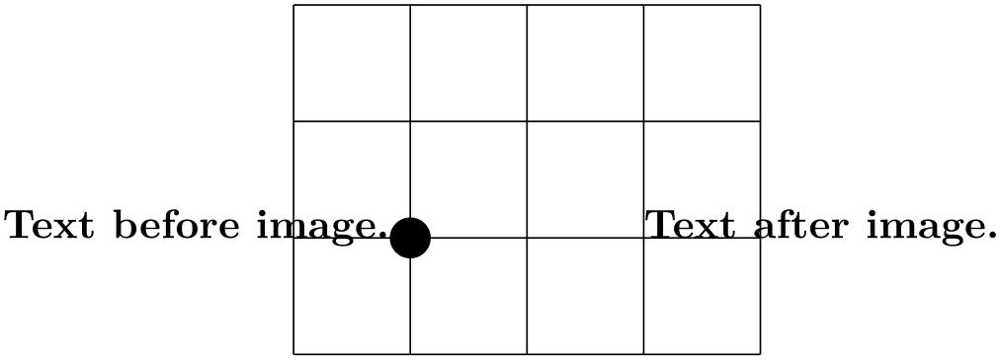
Text
before
image.%
\begin{tikzpicture}[trim left, trim right=2cm, baseline]
\draw (-1,-1) grid
(3,2);
\fill (0,0) circle
(5pt);
\end{tikzpicture}%
Text
after
image.
In addition to trim left=0pt, we also discard everything which is right of \(x\)=2cm. Furthermore, the baseline key supports vertical alignment as well (using the \(y\)=0cm baseline).
Use trim right=default to reset the value.
Note that baseline, trim left and trim right are currently the only supported way of truncated bounding boxes which are compatible with image externalization (see the external library for details).
-
/pgf/trim lowlevel=true|false (no default, initially false) ¶
This affects only the basic level image externalization: the initial configuration trim lowlevel=false stores the normal image, without trimming, and the trimming into a separate file. This allows reduced bounding boxes without clipping the rest away. The trim lowlevel=true information causes the image externalization to store the trimmed image, possibly resulting in clipping.
15.9 Clipping and Fading (Soft Clipping)¶
Clipping path means that all painting on the page is restricted to a certain area. This area need not be rectangular, rather an arbitrary path can be used to specify this area. The clip option, explained below, is used to specify the region that is to be used for clipping.
A fading (a term that I propose, fadings are commonly known as soft masks, transparency masks, opacity masks or soft clips) is similar to clipping, but a fading allows parts of the picture to be only “half clipped”. This means that a fading can specify that newly painted pixels should be partly transparent. The specification and handling of fadings is a bit complex and it is detailed in Section 23, which is devoted to transparency in general.
-
/tikz/clip(no value) ¶
This option causes all subsequent drawings to be clipped against the current path and the size of subsequent paths will not be important for the picture size. If you clip against a self-intersecting path, the even-odd rule or the nonzero winding number rule is used to determine whether a point is inside or outside the clipping region.
The clipping path is a graphic state parameter, so it will be reset at the end of the current scope. Multiple clippings accumulate, that is, clipping is always done against the intersection of all clipping areas that have been specified inside the current scopes. The only way of enlarging the clipping area is to end a {scope}.
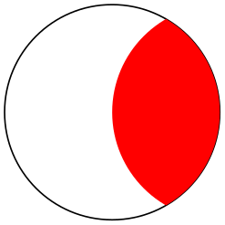
\begin{tikzpicture}
\draw[clip] (0,0) circle
(1cm);
\fill[red] (1,0) circle
(1cm);
\end{tikzpicture}
It is usually a very good idea to apply the clip option only to the first path command in a scope.
If you “only wish to clip” and do not wish to draw anything, you can use the \clip command, which is a shorthand for \path[clip].
\begin{tikzpicture}
\clip (0,0) circle
(1cm);
\fill[red] (1,0) circle
(1cm);
\end{tikzpicture}
To keep clipping local, use {scope} environments as in the following example:
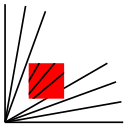
\begin{tikzpicture}
\draw (0,0) --
( 0:1cm);
\draw (0,0) --
(10:1cm);
\draw (0,0) --
(20:1cm);
\draw (0,0) --
(30:1cm);
\begin{scope}[fill=red]
\fill[clip] (0.2,0.2) rectangle
(0.5,0.5);
\draw (0,0) --
(40:1cm);
\draw (0,0) --
(50:1cm);
\draw (0,0) --
(60:1cm);
\end{scope}
\draw (0,0) --
(70:1cm);
\draw (0,0) --
(80:1cm);
\draw (0,0) --
(90:1cm);
\end{tikzpicture}
There is a slightly annoying catch: You cannot specify certain graphic options for the command used for clipping. For example, in the above code we could not have moved the fill=red to the \fill command. The reasons for this have to do with the internals of the pdf specification. You do not want to know the details. It is best simply not to specify any options for these commands.
15.10 Doing Multiple Actions on a Path¶
If more than one of the basic actions like drawing, clipping and filling are requested, they are automatically applied in a sensible order: First, a path is filled, then drawn, and then clipped (although it took Apple two major revisions of their operating system to get this right…). Sometimes, however, you need finer control over what is done with a path. For instance, you might wish to first fill a path with a color, then repaint the path with a pattern and then repaint it with yet another pattern. In such cases you can use the following two options:
-
/tikz/preaction=⟨options⟩(no default) ¶
This option can be given to a \path command (or to derived commands like \draw which internally call \path). Similarly to options like draw, this option only has an effect when given to a \path or as part of the options of a node; as an option to a {scope} it has no effect.
When this option is used on a \path, the effect is the following: When the path has been completely constructed and is about to be used, a scope is created. Inside this scope, the path is used but not with the original path options, but with ⟨options⟩ instead. Then, the path is used in the usual manner. In other words, the path is used twice: Once with ⟨options⟩ in force and then again with the normal path options in force.
Here is an example in which the path consists of a rectangle. The main action is to draw this path in red (which is why we see a red rectangle). However, the preaction is to draw the path in blue, which is why we see a blue rectangle behind the red rectangle.
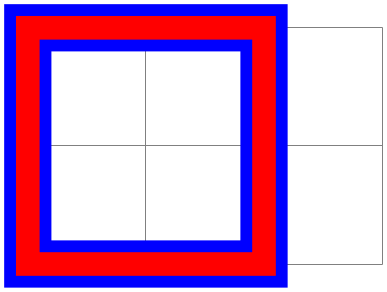
\begin{tikzpicture}
\draw[help lines] (0,0) grid
(3,2);
\draw
[preaction={draw,line
width=4mm,blue}]
[line width=2mm,red] (0,0) rectangle
(2,2);
\end{tikzpicture}
Note that when the preactions are performed, then the path is already “finished”. In particular, applying a coordinate transformation to the path has no effect. By comparison, applying a canvas transformation does have an effect. Let us use this to add a “shadow” to a path. For this, we use the preaction to fill the path in gray, shifted a bit to the right and down:
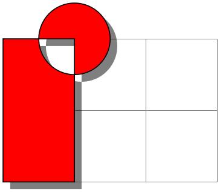
\begin{tikzpicture}
\draw[help lines] (0,0) grid
(3,2);
\draw
[preaction={fill=black,opacity=.5,
transform
canvas={xshift=1mm,yshift=-1mm}}]
[fill=red] (0,0) rectangle
(1,2)
(1,2) circle
(5mm);
\end{tikzpicture}
Naturally, you would normally create a style shadow that contains the above code. The shadows library, see Section 70, contains predefined shadows of this kind.
It is possible to use the preaction option multiple times. In this case, for each use of the preaction option, the path is used again (thus, the ⟨options⟩ do not accumulate in a single usage of the path). The path is used in the order of preaction options given.
In the following example, we use one preaction to add a shadow and another to provide a shading, while the main action is to use a pattern.
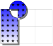
\usetikzlibrary {patterns}
\begin{tikzpicture}
\draw[help lines] (0,0) grid
(3,2);
\draw [pattern=fivepointed stars]
[preaction={fill=black,opacity=.5,
transform
canvas={xshift=1mm,yshift=-1mm}}]
[preaction={top color=blue,bottom
color=white}]
(0,0) rectangle
(1,2)
(1,2) circle
(5mm);
\end{tikzpicture}
A complicated application is shown in the following example, where the path is used several times with different fadings and shadings to create a special visual effect:
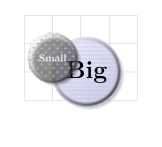
\usetikzlibrary {fadings,patterns}
\begin{tikzpicture}
[
% Define an interesting style
button/.style={
% First preaction: Fuzzy shadow
preaction={fill=black,path
fading=circle with fuzzy
edge 20 percent,
opacity=.5,transform
canvas={xshift=1mm,yshift=-1mm}},
% Second preaction: Background pattern
preaction={pattern=#1,
path
fading=circle with fuzzy
edge 15 percent},
% Third preaction: Make background shiny
preaction={top color=white,
bottom
color=black!50,
shading
angle=45,
path
fading=circle with fuzzy
edge 15 percent,
opacity=0.2},
% Fourth preaction: Make edge especially shiny
preaction={path fading=fuzzy
ring 15 percent,
top
color=black!5,
bottom
color=black!80,
shading
angle=45},
inner sep=2ex
},
button/.default=horizontal
lines light blue,
circle
]
\draw [help lines] (0,0) grid
(4,3);
\node [button] at
(2.2,1) {\Huge Big};
\node [button=crosshatch dots light steel blue,
text=white] at
(1,1.5) {Small};
\end{tikzpicture}
-
/tikz/postaction=⟨options⟩(no default) ¶
The postactions work in the same way as the preactions, only they are applied after the main action has been taken. Like preactions, multiple postaction options may be given to a \path command, in which case the path is reused several times, each time with a different set of options in force.
If both pre- and postactions are specified, then the preactions are taken first, then the main action, and then the post actions.
In the first example, we use a postaction to draw the path, after it has already been drawn:
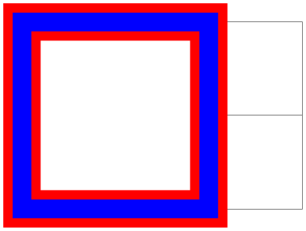
\begin{tikzpicture}
\draw[help lines] (0,0) grid
(3,2);
\draw
[postaction={draw,line
width=2mm,blue}]
[line width=4mm,red,fill=white] (0,0) rectangle
(2,2);
\end{tikzpicture}
In another example, we use a postaction to “colorize” a path:
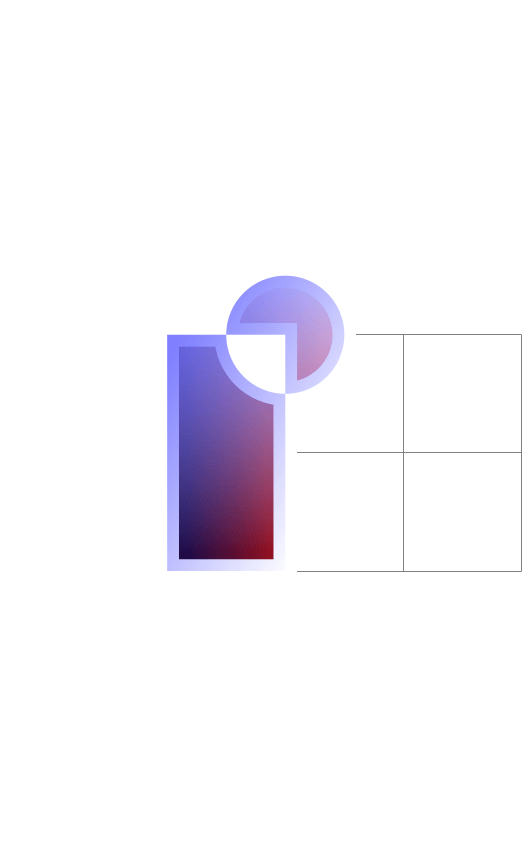
\usetikzlibrary {fadings}
\begin{tikzpicture}
\draw[help lines] (0,0) grid
(3,2);
\draw
[postaction={path
fading=south,fill=white}]
[postaction={path
fading=south,fading angle=45,fill=blue,opacity=.5}]
[left color=black,right color=red,draw=white,line width=2mm]
(0,0) rectangle
(1,2)
(1,2) circle
(5mm);
\end{tikzpicture}
15.11 Decorating and Morphing a Path¶
Before a path is used, it is possible to first “decorate” and/or “morph” it. Morphing means that the path is replaced by another path that is slightly varied. Such morphings are a special case of the more general “decorations” described in detail in Section 24. For instance, in the following example the path is drawn twice: Once normally and then in a morphed (=decorated) manner.
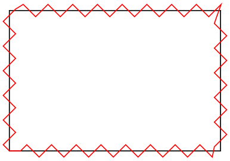
\usetikzlibrary {decorations.pathmorphing}
\begin{tikzpicture}
\draw (0,0) rectangle
(3,2);
\draw [red, decorate, decoration=zigzag]
(0,0) rectangle
(3,2);
\end{tikzpicture}
Naturally, we could have combined this into a single command using pre- or postaction. It is also possible to deform shapes:
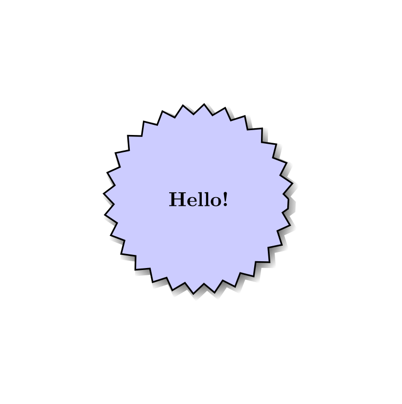
\usetikzlibrary {decorations.pathmorphing,shadows}
\begin{tikzpicture}
\node [circular drop shadow={shadow scale=1.05},minimum size=3.13cm,
decorate, decoration=zigzag,
fill=blue!20,draw,thick,circle] {Hello!};
\end{tikzpicture}